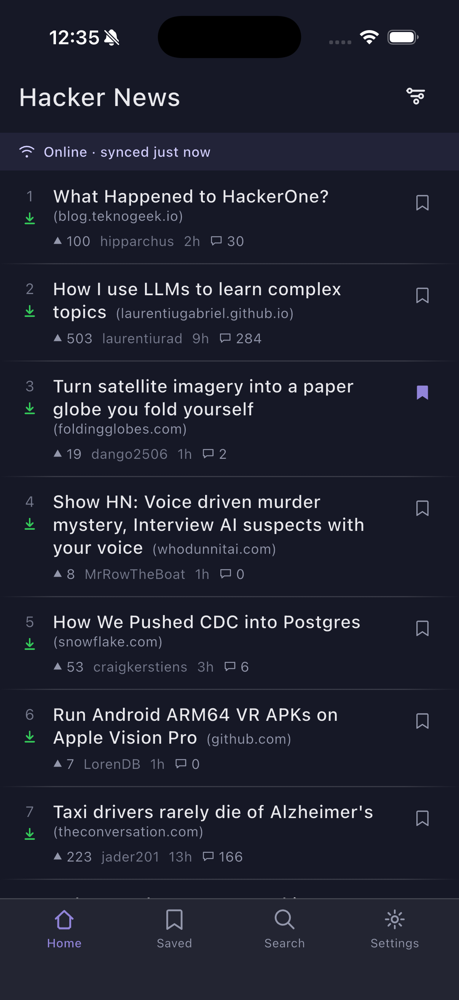
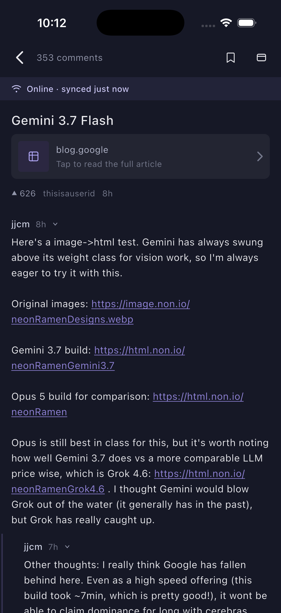

Hacker News, offline‑first
Every story on the front page downloads its comments automatically in the background, so the subway, a flight, or a dead zone doesn't turn the app into an empty screen.


What it does
- Ranked home feed — Top, New, Best of Today, and a client-side "Rising" sort, pulled live from the official HN Firebase API.
- Every story auto-downloads its comments, right after the feed loads — not just the ones you bookmark.
- Bookmarking a story keeps its thread current on every future visit and protects it from ever going stale.
- Opening a story never disturbs what's on screen — a cached copy shows immediately while a fetch runs quietly behind it.
- Truncated threads are recoverable — tap a "load more" notice to fetch exactly those replies, in place.
- Offline is a first-class state, not an error — losing connectivity shows the last feed you had, muted and tagged, rather than a blank screen.
Free & Pro
Nocturne is free, with a single $1.99 one‑time unlock. No subscription — there's no recurring server cost behind this app to justify one. Nothing that works today moves behind the paywall; the paid tier only adds capability.
| Free | Pro | |
|---|---|---|
| Feeds | Top, New, Best of Today, Rising | + Ask HN, Show HN, Jobs |
| Auto-downloaded comments | full depth, every front-page story | same |
| Saved threads | unlimited | same |
| Saved comments | — | save an individual comment, not just its whole thread |
| Offline article reading | — | full article text, saved alongside the thread |
| Appearance | Nocturne dark, font scaling | + AMOLED black, Hacker News (light) |
Privacy, in one paragraph
Nocturne reads the public, read-only Hacker News API and nothing else — no accounts, no login, no analytics, no crash reporting, no third-party SDKs. Every cache is a plain file on your device. The one exception is the Pro unlock itself, which goes through Apple's own StoreKit and never touches a server Nocturne controls. Full details on the Privacy Policy page.